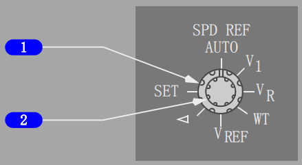

内部相关链接:
发动机反推面板
1 N1设置(N1 SET)外圈旋钮
自动(AUTO)-
• 根据N1限制页面和起飞基准页面由FMC调定两个基准N1游标
• 在A/T生效的N1限制上显示基准N1游标。
双位(BOTH)–
• 通过旋转N1 SET内圈旋钮人工设定两个基准N1游标和读数
• 对A/T的操作无影响。
1 或 2 -
• 通过旋转N1 SET内圈旋钮人工设定相应的基准N1游标和读数
• 对A/T的操作无影响。
2 N1设定(N1 SET)内圈旋钮(弹簧定中)
旋转
- 当N1 SET外圈旋钮在BOTH、1或2位时，调节基准N1游标和读数。
3 基准N1游标
显示(绿色) - N1 SET外圈旋钮在AUTO、1、2或BOTH位。
位置和基准N1读数上的数值一致。
4 N1红线
显示(红色)-
N1％ RPM(转/分)操作限制
5 N1指令区
显示(白色)-
实际N1与推力手柄位置指令值之间的瞬时差值。
6 N1 RPM 读数(数字式)
显示(白色)- 正常操作范围。
显示(红色)-
• 超出操作限制
• 在地面发动机关车后，显示的红色方框表示飞行中发生过超限。
7 基准N1读数
显示（绿色）-
• 当N1 SET外圈旋钮在BOTH、1或2位时，人工设定N1% RPM
• ---- 当N1 SET外圈旋钮在AUTO位且FMC源无效时。
• 当N1 SET外圈旋钮在AUTO位时，显示空白(选型)
• 当N1 SET外圈旋钮在AUTO位时，可能指示固定减功率、假设温度减功率、或者同时显示固定和假设温度减功率。(选型)
选择反推时不显示。

1 速度基准选择器(外圈)
在空速指示上调定基准空速游标：
• AUTO - 由FMC自动提供基准空速和全重
• V1 - 在地面用来人工设定决断速度；在空中，显示“INVALID ENTRY”(无效输入)
• VR - 在地面用来人工设定抬轮速度；在空中，显示“INVALID ENTRY”(无效输入)
• WT - 允许人工输入基准全重
• VREF - 在空中用来人工调定着陆基准速度，在地面显示“INVALID ENTRY”(无效输入)
• 游标5 - 用来人工将白色游标5调至所需数值
• SET - 清除速度基准显示。
2 速度基准选择器(内圈)(两个速度旋转位)
旋转 –
• 人工设定合适的基准空速或全重
• 数字显示出现在空速指示下方。
介绍
飞机由两台CFM56-7发动机提供动力。这种发动机是双转子、轴流式涡轮风扇发动机。
N1转子包含一个风扇、一个低压压气机和一个低压涡轮。N2转子包含一个高压压气机和一个高压涡轮。
N1和N2转子在机械上是相互独立的。N2转子驱动发动机齿轮箱。由引气驱动的起动机马达与N2转子连接。
双通道电子发动机控制(EEC)调节每台发动机。
EEC监控自动油门和飞行机组输入信号，以自动设置发动机推力。
每台发动机有各自的驾驶舱控制装置。通过改变推力手柄位置来实现推力设置。
推力手柄由自动油门系统自动定位，或由飞行机组人员人工定位。
前推力手柄控制从慢车推力到最大推力的正向推力。
如果EEC在备用方式，仅在已采取了所有其它可行措施而飞机即将撞地的紧急情况下，才可考虑将推力手柄前推到底以提供过大推力。
反推手柄控制推力的范围从反推慢车到最大反推
发动机电子控制 (EEC)
每台发动机都有一个全权数字式EEC。
每个EEC有两个独立的控制通道，如果正在工作的通道失效，则通道自动转换。
在发动机起动或尝试起动时，EEC交替使用两个控制通道。EEC使用推力手柄的输入自动控制前推力和反推力。
EEC利用N1设定两种控制方式下的推力：正常和备用。可使用发动机面板上的EEC电门人工选择控制方式。
推力手柄的位置未达到前止挡位时，就可获得所装发动机的全额定起飞推力。
固定或假设温度起飞减推力额定值是在推力手柄的位置未达到全额定起飞推力时就设定的。
如果推力手柄向前推到前止动位，则可获得最大额定推力。EEC根据如下飞机型号限制最大推力：
Note: 根据飞机机型/序列号划分典型发动机额定推力。对于实际发动机额定推力，参考“性能签派”章。
• 737-700 - CFM56-7B24 额定值
• 737-800 - CFM56-7B27 额定值
EEC备用方式
EEC可以在软或硬两种备用方式下工作。
如果在正常方式下工作，没有获得所需的信号，EEC自动转换到软备用方式。出现这种情况时,备用(ALTN)电门亮，同时ON指示仍可见。
在软备用方式下, EEC利用最新有效的飞行状态确定发动机参数，这使得方式发生改变而不会使发动机推力立刻改变。
随着飞行条件的变化，可能会出现推力额定功率不足或过大的情况。把推力手柄拉倒慢车或用后顶板上的EEC电门人工选择ALTN可进入硬备用方式，在输入该方式前一直保留软备用方式。
Note: 任一电子显示组件(DEU)失效都将导致两部EEC信号丢失。EEC ALTN灯亮并且每个EEC返回到备用方式，以阻止发动机使用单一数据源信号工作。
进入硬备用方式时, EEC返回到备用方式推力计划。
推力手柄处于相同的位置时，硬备用方式推力总是等于或高于正常方式推力。
在软备用方式下，通过收推力手柄到慢车位进入硬备用方式，此种方式下ALTN电门保持亮且ON指示仍然可见。
人工选择ALTN时，ON指示消失。
结构限制保护
在正常和备用方式下，EEC提供N1和N2红线超速保护。由于EEC不提供EGT红线超限保护，必须由机组人工进行EGT限制观察。
慢车操作
EEC自动选择地面最小慢车、飞行最小慢车和进近慢车。地面操作时选择地面最小慢车，在大部分飞行阶段中选择飞行最小慢车。
在空中，如果襟翼在着陆形态或任一发动机防冰接通，则选择进近慢车。
在相同的空速和高度下，进近慢车的N1和N2% RPM(转/分)将高于飞行最小慢车的N1和N2% RPM。
较高的RPM可改善复飞时的发动机加速时间。
保持进近慢车，直至接地后选择了地面最小慢车。
在空中，如果故障阻碍EEC接收襟翼或防冰信号，则在15,000英尺MSL以下开始实施进近慢车计划。
非正常起动保护(仅地面起动)
在地面起动期间，EEC监控发动机参数以探测是否会出现热起动、发动机失速、EGT超限和湿起动。
空中起动时，这些保护特性不起作用。
如果出现EGT快速上升或EGT接近起动限制或压缩机失速，表明即将发生热起动，这时包围EGT数字读数的白框闪烁。
当起动手柄移至CUTOFF位或发动机达到慢车N2时，闪烁的白框复置。
对即将发生热起动或失速的发动机，当前的EEC版本(7.B.Q及之后的版本)将自动关断点火并切断燃油。
如果EGT超出起动限制, EGT显示框和刻度都变成红色。EEC自动关断点火并切断发动机的燃油供应。
当EGT降到起动限制以下时，警戒终止且显示恢复为白色。
双发关车后，EGT框变红色，以提醒机组注意发生过超温情况。
如果起动手柄移至慢车位后EGT不上升，表明发生湿起动。
若探测到湿起动，EEC关断点火并且在起动手柄移至慢车位15秒后切断发动机的燃油供给。